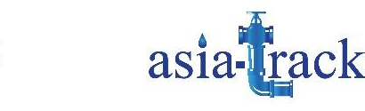
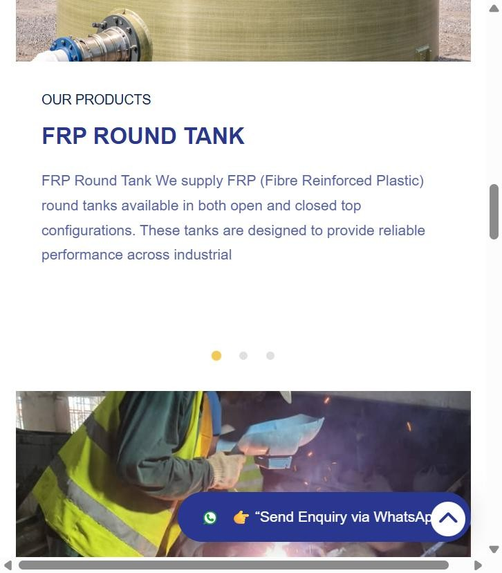
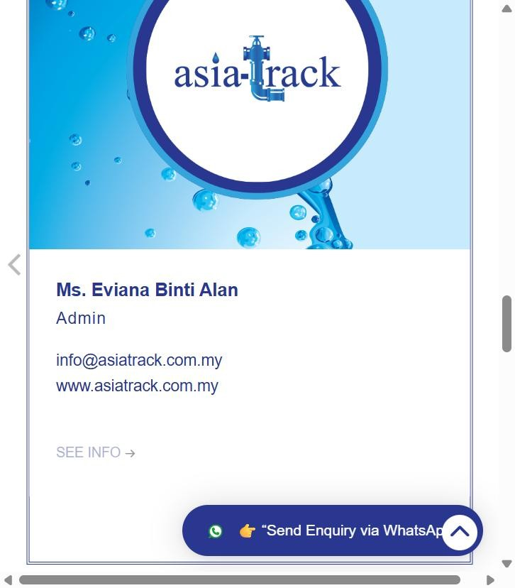

Asia Track · Case StudyAsia Track: A Site Built for Engineers and Procurement, Not Just Browsers
A corporate website for Asia Track (M) Sdn Bhd, a Kota Kinabalu plumbing, pipe-fabrication and water-tank contractor — laid out around the products, industries and named leadership a procurement team actually checks before awarding a job, backed by a managed Facebook and Instagram presence.

The brief
Asia Track (M) Sdn Bhd fabricates pipelines and supplies tank systems for industrial, commercial and infrastructure clients — water treatment plants, food production, energy and palm-oil processing among them. A contractor selling into that market is vetted on capability and track record before price, so the brief was a site that reads like an engineering firm's credentials: real products, real industries served, and a named leadership team, not a generic "contact us for a quote" page.
Two deliverables in one project
Products, services & portfolio
Pipe fabrication, tank installation, three named products and an 8-industry service list, plus a dedicated Our Portfolio page.
Facebook & Instagram
The Asia Track Facebook Page and Instagram account, managed alongside the site as a second channel for the business.
What the site covers
A real product and service catalogue. Pipe Fabrications (conventional materials — MS, SS, MSCL, HDG, HDPE — plus GRP composite pipe) and Tank services (installation, maintenance and repair) each have their own page, alongside three named products: Sectional Panel Tanks, FRP Round Tank, and Glass Reinforced Plastic (GRP) Pipe.
Eight named industries. The site sets out exactly which sectors Asia Track serves — domestic/vessel water, treatment plants, biogas, compressed air, firefighting, food industry, palm oil, and biochemical pipelines — so a procurement contact can see their own industry named before they ever pick up the phone.
A named leadership team. The CEO, CFO, and four other directors and staff are introduced by name, role and a short bio, each with a click-to-WhatsApp link — the site puts real people behind the company name.
Google Reviews built in. Real customer reviews are pulled directly onto the home page, alongside membership in the Sabah Plumber Association and a two-office contact setup (Kota Kinabalu HQ and a Bangsar, Kuala Lumpur branch).
A WhatsApp concierge widget. A branded "Send Enquiry via WhatsApp" chat widget sits on every page, so a site visitor can start a conversation without hunting for a contact page.

The social channels
Alongside the website, Click 4 Tech Solutions manages Asia Track's Facebook and Instagram presence, giving the business a second, more conversational front door beyond the site's own enquiry channels.